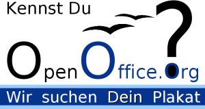

| Empfang |
|---|
| Startseite |
| Software |
| Produktinfo |
| Features |
| Download |
| CD-ROM bestellen |
| Rechtschreibprüfung |
| Dokumentation |
| Inhalt |
| Installationshandbuch |
| How-Tos |
| FAQs |
| Literatur |
| Support |
| Hilfe per Mail |
| Foren (extern) |
| Professioneller Support |
| Marketing |
| Marketing-Material |
| Veranstaltungen |
| Presse-Infos |
| Presse-FAQ |
| Über das Projekt |
| Geschichte |
| Meilensteine |
| Unterprojekte |
| Incubator |
| Whitepapers |
| Sponsoren |
| Mithelfen |
| ... aber wie? |
| Zuwendungen |
| Ansprechpartner |
| Sonstiges |
| Bildungsportal |
| Danksagungen |
| Links |
| Unsere Seiten linken |
| Rechtliches |
| Infos für Helfer |

OpenOffice.org Plakat-Wettbewerb
Aus Anlass des einjährigen Bestehens der freien Bürosoftware OpenOffice.org 1.0 hatte das deutsche Sprachprojekt bei OpenOffice.org vom 1. Mai 2003 bis zum 29. Februar 2004 erstmals einen Plakat-Wettbewerb durchgeführt.
Schirmherrschaft
Die Abgeordnete im deutschen Bundestag und medien- und bildungspolitische
Sprecherin von Bündnis 90/Die Grünen,
Grietje Bettin,
hatte die Schirmherrschaft für diesen Plakat-Wettbewerb übernommen.
Ihr Grußwort finden Sie
hier.
Das österreichische Bildungsministerium war Partner des Plakat-Wettbewerbs. ( Ausschreibungstext beim bm:bwk )
Teilnahme
Der Wettbewerb richtete sich an Schüler aus allen Jahrgangsstufen und Schulformen. Teilnehmen durften Gruppen oder einzelne Schüler. Die Schüler konnten am Wettbewerb auch ohne den begleitenden Rahmen einer Schulveranstaltung teilnehmen.
Thema
OpenOffice.org fehlte noch ein originelles Plakat, zur Präsentation auf Messen und anderen Gelegenheiten. OpenOffice.org war gleichzeitig aber in den Schulen noch viel zu unbekannt. Diesem Mangel sollte abgeholfen werden. Daher hatte die Abteilung Öffentlichkeitsarbeit des deutsch-sprachigen OpenOffice.org-Projekts diesen Wettbewerb ausgeschrieben und die Schüler animiert, sich kreativ mit dem Thema „OpenOffice.org“ zu befassen.
Es konnten Bilder bzw. Graphiken zu dem Programm OpenOffice.org im Allgemeinen sein oder zu einem bestimmten Programm-Modul, zu Open Source oder alles was zum Projekt OpenOffice.org passte. Ein geeignetes Thema war auch die Version 1.1 von OpenOffice.org, die im Jahr 2003 erschien. Es sollte keine Einschränkungen bezüglich der Gestaltung geben. Also alles was denkbar war und sich auf der Marketing-Seite von OpenOffice.org veröffentlichen ließ, konnte eingesendet werden und nahm am Wettbewerb teil.
Verbleib
Die besten Beiträge werden auf der
deutschen OpenOffice.org-Webseite veröffentlicht. Die
Plakate werden auf der Marketing-Webseite
stehen und können von jedem heruntergeladen werden. Für Messen
sowie für andere Veranstaltungen werden wir sie drucken. Wenn
der Schüler es wünscht, sogar mit Namen des Urhebers.
Eingereichte Plakate finden sie hier auf den Seiten des deutschen OpenOffice.org Portals von Malte Kaldewey.
Aspekte
Wir sahen folgende Herausforderungen bzw. Aspekte, mit denen sich ein Schüler bei diesem Wettbewerb auseinanderzusetzen hatte:
Sprachliche Aspekte:
Welche sprachlichen Mittel kann man einsetzen? (Slogans, Artikel)Künstlerische Aspekte:
Farbliche Gestaltung, Aufteilung der Plakatfläche, Gestaltung der graphischen ElementeTechnische Aspekte:
Mit welcher Software kann ich das erledigen? Wie ist die Software zu bedienen? In welchem Format soll gespeichert werden? Wie sicher ist das Speicherformat?Soziale Aspekte:
mögliche Gruppenarbeit, ehrenamtliche Arbeit in einem offenen, internationalen ProjektWirtschaftliche Aspekte:
Wie kann man das Produkt vermarkten? Wen will ich mit dem Plakat ansprechen? Gibt es kostenlose Software für die Erstellung?Rechtliche Aspekte:
Unter welcher Lizenz darf Software kopiert, verändert bzw. installiert werden? Was ist Open-Source? Was ist LGPL?
Werbung
Materialien rund um den Plakat-Wettbewerb:
- Die Ausschreibung (pdf | sxw).
- Ein Werbeplakat (pdf | sxw).
- Ein Faltflyer (pdf | sxw).
- Das Grußwort der Schirmherrin (pdf).
- Artikel (sxw | pdf)
Preise und Gewinner
Wir freuen uns über die enorme Beteiligung! Es sind ganz, ganz tolle Entwürfe eingegangen.
298 Plakate haben am Wettbewerb teilgenommen. Die Teilnehmer kamen aus Deutschland, Österreich, Schweiz und Italien.
Gewinner
Das Grußwort von Grietje Bettin zur Preisverleihung finden Sie hier.
Die Gewinner wurden durch eine Abstimmung der Mitglieder von OpenOffice.org ermittelt.
Der Rechtsweg war ausgeschlossen.
Die Liste der Gewinner finden Sie hier.
Die Verleihung der Preise fand auf der CeBIT 2004 in Hannover
(Halle 6, Linux Forum) statt: am Samstag, den 20.03. von 15:15 Uhr bis 16:00 Uhr.
Die Gewinne wurden von den unten
aufgeführten Sponsoren gestiftet.
- 1. Preis: Ein PC, Produktinfo
- 2. Preis: eine Digitalkamera HP PhotoSmart 320
- 3. Preis: Eintritt zur OpenOffice.org Conferenz 2004 und zwei Übernachtungen in Berlin
- 4. bis 14. Preis: SuSE Linux Distributionen (die neue Version 9.1 kommt Anfang April per Post)
- 15. und 16. Preis: Webspace (je 50 MB) für zwei Jahre
- 17. Preis: Internetauftritt inklusive Content Management System
- 18. - 20. Preis: Jahresabos - Auswahl: Linux User, Linux Magazin oder Easy Linux
- 21. Preis: Pinguinstofftier
- Eintrittskarten zur CeBIT werden für die Hauptgewinner bereitgestellt.
- Die fünf best plazierten Plakate werden professionell gedruckt.
Herzlichen Dank an alle Teilnehmer
Das Team des deutschen Sprachprojekts bei
OpenOffice.org
Die Sponsoren dieser Aktion:
- iframe IT-Solutions and Consulting AG,
- Linux New Media AG,
- LX-Networks,
- Lx-System GbR,
- probusiness AG,
- tarent Gesellschaft für Softwareentwicklung und IT-Beratung mbH,
- Sun Microsystems,
- SuSE Linux AG,
- Wieser Informationstechnik